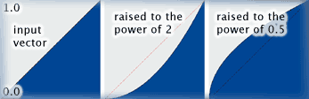

This transformation raises each sample of the input vector to the power of a given value (when 'Raise to the Power' is checked) and then multiplies the result by a given value (when 'Multiply' is checked). For input values between 0.0 and 1.0, the results of raising them to the power of 2 and raising them to the power of 0.5 (i.e. taking the square root) are shown in the image below.
